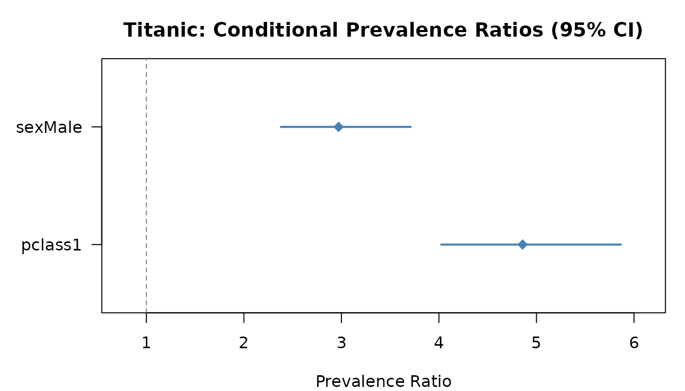

Reproducing the Examples from Amorim & Ospina (2021)
Leila D. Amorim & Raydonal Ospina
2026-06-05
Source:vignettes/article-examples.Rmd
article-examples.RmdThis vignette reproduces the numerical examples from:
Amorim, L. D. & Ospina, R. (2021). Prevalence ratio estimation using R. Anais da Academia Brasileira de Ciências, 93(4), e20190316. doi: 10.1590/0001-3765202120190316
Each section corresponds to one of the datasets used in the paper.
Example 1 — Low Birth Weight (LBW): clustered binary data
Data
244 mothers followed during two pregnancies in Salvador, Brazil. Outcome: low birth weight (< 2500 g). Clustering: two births per mother.
data(LBW)
cat("n obs =", nrow(LBW), "| mothers =", length(unique(LBW$ID)), "\n")
#> n obs = 488 | mothers = 188
cat("Prevalence of low birth weight:", round(mean(LBW$low == "Low"), 3), "\n\n")
#> Prevalence of low birth weight: 0.309
table(LBW$low, LBW$smoke)
#>
#> No Yes
#> Normal 223 114
#> Low 70 81Independent GLM (ignoring clustering)
LBW$low_bin <- as.integer(LBW$low == "Low")
LBW$smoke_bin <- as.integer(LBW$smoke == "Yes")
LBW$race_bin <- as.integer(LBW$race == "Non-white")
fit_lbw_glm <- glm(low_bin ~ smoke_bin + race_bin + age,
family = binomial, data = LBW)
cat("--- Conditional PR (GLM) ---\n")
#> --- Conditional PR (GLM) ---
prLogisticDelta(fit_lbw_glm, standardisation = "conditional")
#>
#> Prevalence Ratio Estimation via Logistic Regression
#> ----------------------------------------------------
#> Model : glm
#> Method : delta
#> Standardis. : conditional
#> Conf. level : 95%
#> ----------------------------------------------------
#>
#> Estimate 2.5% 97.5%
#> smoke_bin 1.7437 1.3409 2.2674
#> race_bin 0.6017 0.3581 1.0111
#> age 1.4135 0.8644 2.3115
cat("--- Marginal PR (GLM) ---\n")
#> --- Marginal PR (GLM) ---
prLogisticDelta(fit_lbw_glm, standardisation = "marginal")
#>
#> Prevalence Ratio Estimation via Logistic Regression
#> ----------------------------------------------------
#> Model : glm
#> Method : delta
#> Standardis. : marginal
#> Conf. level : 95%
#> ----------------------------------------------------
#>
#> Estimate 2.5% 97.5%
#> smoke_bin 1.7467 1.3390 2.2786
#> race_bin 0.6397 0.3961 1.0330
#> age 1.3527 0.8664 2.1120GEE — accounting for within-mother correlation
library(geepack)
fit_lbw_gee <- geeglm(low_bin ~ smoke_bin + race_bin + age,
family = binomial, id = ID,
corstr = "exchangeable", data = LBW)
cat("--- Marginal PR (GEE, exchangeable) ---\n")
#> --- Marginal PR (GEE, exchangeable) ---
prLogisticGEE(fit_lbw_gee)
#>
#> Prevalence Ratio Estimation via Logistic Regression
#> ----------------------------------------------------
#> Model : geeglm
#> Method : delta
#> Standardis. : marginal
#> Conf. level : 95%
#> ----------------------------------------------------
#>
#> Estimate 2.5% 97.5%
#> smoke_bin 1.5927 1.1019 2.3021
#> race_bin 0.6382 0.3424 1.1898
#> age 1.4748 1.0557 2.0604Mixed model (random intercept per mother)
library(lme4)
#> Loading required package: Matrix
fit_lbw_ml <- glmer(low_bin ~ smoke_bin + race_bin + age + (1 | ID),
family = binomial, data = LBW)
cat("--- Marginal PR (glmer) ---\n")
#> --- Marginal PR (glmer) ---
prLogisticDelta(fit_lbw_ml, standardisation = "marginal")
#>
#> Prevalence Ratio Estimation via Logistic Regression
#> ----------------------------------------------------
#> Model : glmer
#> Method : delta
#> Standardis. : marginal
#> Conf. level : 95%
#> ----------------------------------------------------
#>
#> Estimate 2.5% 97.5%
#> smoke_bin 8.2292 1.4402 47.0203
#> race_bin 0.2303 0.0309 1.7158
#> age 3.2625 0.9103 11.6931Example 2 — Thailand Education Study: multilevel data
Data
8582 students in 411 schools. Outcome: grade repetition
(rgi).
data(Thailand)
cat("n =", nrow(Thailand), "| schools =", length(unique(Thailand$schoolid)), "\n")
#> n = 8582 | schools = 411
cat("Prevalence of grade repetition:", round(mean(Thailand$rgi == "Yes"), 3), "\n\n")
#> Prevalence of grade repetition: 0.145
table(Thailand$rgi, Thailand$sex)
#>
#> Girl Boy
#> No 3750 3587
#> Yes 495 750Independent GLM
Thailand$rgi_bin <- as.integer(Thailand$rgi == "Yes")
Thailand$sex_bin <- as.integer(Thailand$sex == "Boy")
Thailand$pped_bin <- as.integer(Thailand$pped == "Yes")
fit_thai_glm <- glm(rgi_bin ~ sex_bin + pped_bin,
family = binomial, data = Thailand)
cat("--- Conditional PR (GLM) ---\n")
#> --- Conditional PR (GLM) ---
prLogisticDelta(fit_thai_glm, standardisation = "conditional")
#>
#> Prevalence Ratio Estimation via Logistic Regression
#> ----------------------------------------------------
#> Model : glm
#> Method : delta
#> Standardis. : conditional
#> Conf. level : 95%
#> ----------------------------------------------------
#>
#> Estimate 2.5% 97.5%
#> sex_bin 1.4585 1.3176 1.6145
#> pped_bin 0.5962 0.5341 0.6654Mixed model
fit_thai_ml <- glmer(rgi_bin ~ sex_bin + pped_bin + (1 | schoolid),
family = binomial, data = Thailand)
#> Warning in checkConv(attr(opt, "derivs"), opt$par, ctrl = control$checkConv, : Model failed to converge with max|grad| = 0.195109 (tol = 0.002, component 1)
#> See ?lme4::convergence and ?lme4::troubleshooting.
#> Warning in checkConv(attr(opt, "derivs"), opt$par, ctrl = control$checkConv, : Model is nearly unidentifiable: very large eigenvalue
#> - Rescale variables?
cat("--- Marginal PR (glmer) ---\n")
#> --- Marginal PR (glmer) ---
prLogisticDelta(fit_thai_ml, standardisation = "marginal")
#>
#> Prevalence Ratio Estimation via Logistic Regression
#> ----------------------------------------------------
#> Model : glmer
#> Method : delta
#> Standardis. : marginal
#> Conf. level : 95%
#> ----------------------------------------------------
#>
#> Estimate 2.5% 97.5%
#> sex_bin 1.6322 1.6312 1.6333
#> pped_bin 0.5723 0.5719 0.5727Example 3 — Toenail Infection Trial: longitudinal data
Data
294 patients measured at up to 7 visits. Outcome: moderate/severe nail separation.
data(Toenail)
cat("n obs =", nrow(Toenail), "| patients =", length(unique(Toenail$ID)), "\n")
#> n obs = 1908 | patients = 294
Toenail$resp_bin <- as.integer(Toenail$Response == "Moderate/severe")
Toenail$trt_bin <- as.integer(Toenail$Treatment == "Terbinafine")
cat("Overall prevalence:", round(mean(Toenail$resp_bin), 3), "\n")
#> Overall prevalence: 0.214GEE
fit_toe_gee <- geeglm(resp_bin ~ trt_bin + Month,
family = binomial, id = ID,
corstr = "exchangeable", data = Toenail)
cat("--- Marginal PR (GEE) ---\n")
#> --- Marginal PR (GEE) ---
prLogisticGEE(fit_toe_gee)
#>
#> Prevalence Ratio Estimation via Logistic Regression
#> ----------------------------------------------------
#> Model : geeglm
#> Method : delta
#> Standardis. : marginal
#> Conf. level : 95%
#> ----------------------------------------------------
#>
#> Estimate 2.5% 97.5%
#> trt_bin 1.0299 0.6949 1.5264
#> Month 0.8723 0.8458 0.8996Example 4 — UIS Drug Treatment Study
GLM — independent observations
UIS$drugFree_bin <- as.integer(UIS$drugFree == "Yes")
fit_uis <- glm(drugFree_bin ~ trt + Age + DrugUse + race + site,
family = binomial, data = UIS)
cat("--- Conditional PR ---\n")
#> --- Conditional PR ---
res_uis_cond <- prLogisticDelta(fit_uis, standardisation = "conditional")
print(res_uis_cond)
#>
#> Prevalence Ratio Estimation via Logistic Regression
#> ----------------------------------------------------
#> Model : glm
#> Method : delta
#> Standardis. : conditional
#> Conf. level : 95%
#> ----------------------------------------------------
#>
#> Estimate 2.5% 97.5%
#> trtLong 1.4233 1.0489 1.9314
#> Age 0.6239 0.4376 0.8896
#> DrugUseLong 1.7785 1.3150 2.4055
#> raceOther 1.2665 0.9006 1.7811
#> siteB 1.2215 0.8798 1.6960
cat("\n--- Marginal PR ---\n")
#>
#> --- Marginal PR ---
res_uis_marg <- prLogisticDelta(fit_uis, standardisation = "marginal")
print(res_uis_marg)
#>
#> Prevalence Ratio Estimation via Logistic Regression
#> ----------------------------------------------------
#> Model : glm
#> Method : delta
#> Standardis. : marginal
#> Conf. level : 95%
#> ----------------------------------------------------
#>
#> Estimate 2.5% 97.5%
#> trtLong 1.3805 1.0321 1.8466
#> Age 0.6774 0.5002 0.9173
#> DrugUseLong 1.7197 1.2724 2.3242
#> raceOther 1.2309 0.9001 1.6834
#> siteB 1.1916 0.8822 1.6096OR vs PR comparison
OR <- exp(coef(fit_uis)[-1])
PR_cond <- coef(res_uis_cond)
PR_marg <- coef(res_uis_marg)
comp <- data.frame(
OR = round(OR, 3),
PR_cond = round(PR_cond, 3),
PR_marg = round(PR_marg, 3)
)
print(comp)
#> OR PR_cond PR_marg
#> trtLong 1.569 1.423 1.381
#> Age 0.576 0.624 0.677
#> DrugUseLong 2.144 1.779 1.720
#> raceOther 1.345 1.267 1.231
#> siteB 1.284 1.222 1.192Bootstrap CIs
set.seed(2024)
res_boot <- prLogisticBootCond(fit_uis, data = UIS, R = 499)
print(res_boot)
#>
#> Prevalence Ratio Estimation via Logistic Regression
#> ----------------------------------------------------
#> Model : glm
#> Method : bootstrap
#> Standardis. : conditional
#> Conf. level : 95%
#> ----------------------------------------------------
#>
#> Estimate Normal CI Percentile CI
#> Estimate Normal.2.5% Normal.97.5% Pct.2.5% Pct.97.5%
#> trtLong 1.4233 0.9436 1.8398 1.0613 1.9683
#> Age 0.6239 0.3833 0.8612 0.4191 0.8908
#> DrugUseLong 1.7785 1.1835 2.3138 1.2892 2.4254
#> raceOther 1.2665 0.8106 1.6997 0.8391 1.7205
#> siteB 1.2215 0.7434 1.6274 0.8628 1.7666Example 5 — Downer Cow Survival
GLM
downer$surv_bin <- as.integer(downer$Survival == "Survived")
fit_downer <- glm(surv_bin ~ Myopathy + AST + CK + Calving,
family = binomial, data = downer)
cat("--- Conditional PR ---\n")
#> --- Conditional PR ---
prLogisticDelta(fit_downer, standardisation = "conditional")
#>
#> Prevalence Ratio Estimation via Logistic Regression
#> ----------------------------------------------------
#> Model : glm
#> Method : delta
#> Standardis. : conditional
#> Conf. level : 95%
#> ----------------------------------------------------
#>
#> Estimate 2.5% 97.5%
#> MyopathyYes 0.3034 0.1001 0.9191
#> AST 1.1900 0.5273 2.6857
#> CK 2.0026 0.8604 4.6611
#> Calving 0.7809 0.4080 1.4946Example 6 — Titanic Survival
GLM — OR vs PR
titanic$surv_bin <- as.integer(titanic$survived == "Yes")
fit_titanic <- glm(surv_bin ~ sex + pclass,
family = binomial, data = titanic)
# Odds Ratios (what logistic gives directly)
cat("--- Odds Ratios ---\n")
#> --- Odds Ratios ---
print(round(exp(cbind(OR = coef(fit_titanic), confint.default(fit_titanic))), 3))
#> OR 2.5 % 97.5 %
#> (Intercept) 0.156 0.126 0.192
#> sexMale 12.151 9.158 16.124
#> pclass1 4.285 3.134 5.858
cat("\n--- Conditional Prevalence Ratios ---\n")
#>
#> --- Conditional Prevalence Ratios ---
res_tit <- prLogisticDelta(fit_titanic, standardisation = "conditional")
print(res_tit)
#>
#> Prevalence Ratio Estimation via Logistic Regression
#> ----------------------------------------------------
#> Model : glm
#> Method : delta
#> Standardis. : conditional
#> Conf. level : 95%
#> ----------------------------------------------------
#>
#> Estimate 2.5% 97.5%
#> sexMale 4.8579 4.0237 5.8650
#> pclass1 2.9711 2.3787 3.7109
cat("\n--- Marginal Prevalence Ratios ---\n")
#>
#> --- Marginal Prevalence Ratios ---
prLogisticDelta(fit_titanic, standardisation = "marginal")
#>
#> Prevalence Ratio Estimation via Logistic Regression
#> ----------------------------------------------------
#> Model : glm
#> Method : delta
#> Standardis. : marginal
#> Conf. level : 95%
#> ----------------------------------------------------
#>
#> Estimate 2.5% 97.5%
#> sexMale 3.5635 3.0375 4.1805
#> pclass1 1.7992 1.5325 2.1123Forest plot
plot(res_tit, main = "Titanic: Conditional Prevalence Ratios (95% CI)")
Forest plot: conditional PR for Titanic survival
Key comparison for Titanic
OR_sex <- exp(coef(fit_titanic)["sexMale"])
PR_sex <- coef(res_tit)["sexMale"]
cat(sprintf(
"Being male:\n OR = %.2f (%.0f%% overestimate over PR)\n PR = %.2f\n",
OR_sex,
(OR_sex / PR_sex - 1) * 100,
PR_sex
))
#> Being male:
#> OR = 12.15 (150% overestimate over PR)
#> PR = 4.86Summary
The table below shows that OR consistently overstates PR when prevalence is above ~10%:
results <- data.frame(
Dataset = c("LBW (GLM)", "Thailand (GLM)", "UIS", "downer", "Titanic"),
Prevalence = c(0.18, 0.16, 0.43, 0.50, 0.38),
Predictor = c("smoke", "sex (Boy)", "trt (Long)", "Myopathy (Yes)", "sex (Male)"),
OR = c(
round(exp(coef(fit_lbw_glm)["smoke_bin"]), 2),
round(exp(coef(fit_thai_glm)["sex_bin"]), 2),
round(exp(coef(fit_uis)["trtLong"]), 2),
round(exp(coef(fit_downer)["MyopathyYes"]), 2),
round(exp(coef(fit_titanic)["sexMale"]), 2)
),
PR_cond = c(
round(coef(prLogisticDelta(fit_lbw_glm))["smoke_bin"], 2),
round(coef(prLogisticDelta(fit_thai_glm))["sex_bin"], 2),
round(coef(res_uis_cond)["trtLong"], 2),
round(coef(prLogisticDelta(fit_downer))["MyopathyYes"], 2),
round(coef(res_tit)["sexMale"], 2)
)
)
results$OR_over_PR <- round(results$OR / results$PR_cond, 2)
print(results)
#> Dataset Prevalence Predictor OR PR_cond OR_over_PR
#> smoke_bin LBW (GLM) 0.18 smoke 2.30 1.74 1.32
#> sex_bin Thailand (GLM) 0.16 sex (Boy) 1.58 1.46 1.08
#> trtLong UIS 0.43 trt (Long) 1.57 1.42 1.11
#> MyopathyYes downer 0.50 Myopathy (Yes) 0.26 0.30 0.87
#> sexMale Titanic 0.38 sex (Male) 12.15 4.86 2.50As prevalence increases, the ratio OR/PR grows — confirming that OR is a poor proxy for PR in common-outcome studies.
Session information
sessionInfo()
#> R version 4.6.0 (2026-04-24)
#> Platform: x86_64-pc-linux-gnu
#> Running under: Ubuntu 24.04.4 LTS
#>
#> Matrix products: default
#> BLAS: /usr/lib/x86_64-linux-gnu/openblas-pthread/libblas.so.3
#> LAPACK: /usr/lib/x86_64-linux-gnu/openblas-pthread/libopenblasp-r0.3.26.so; LAPACK version 3.12.0
#>
#> locale:
#> [1] LC_CTYPE=C.UTF-8 LC_NUMERIC=C LC_TIME=C.UTF-8
#> [4] LC_COLLATE=C.UTF-8 LC_MONETARY=C.UTF-8 LC_MESSAGES=C.UTF-8
#> [7] LC_PAPER=C.UTF-8 LC_NAME=C LC_ADDRESS=C
#> [10] LC_TELEPHONE=C LC_MEASUREMENT=C.UTF-8 LC_IDENTIFICATION=C
#>
#> time zone: UTC
#> tzcode source: system (glibc)
#>
#> attached base packages:
#> [1] stats graphics grDevices utils datasets methods base
#>
#> other attached packages:
#> [1] lme4_2.0-1 Matrix_1.7-5 geepack_1.3.13 prLogistic_2.0.0
#>
#> loaded via a namespace (and not attached):
#> [1] jsonlite_2.0.0 dplyr_1.2.1 compiler_4.6.0 Rcpp_1.1.1-1.1
#> [5] tidyselect_1.2.1 tidyr_1.3.2 jquerylib_0.1.4 textshaping_1.0.5
#> [9] systemfonts_1.3.2 splines_4.6.0 boot_1.3-32 yaml_2.3.12
#> [13] fastmap_1.2.0 lattice_0.22-9 R6_2.6.1 generics_0.1.4
#> [17] knitr_1.51 rbibutils_2.4.1 MASS_7.3-65 backports_1.5.1
#> [21] tibble_3.3.1 nloptr_2.2.1 desc_1.4.3 minqa_1.2.8
#> [25] bslib_0.11.0 pillar_1.11.1 rlang_1.2.0 cachem_1.1.0
#> [29] broom_1.0.13 xfun_0.58 fs_2.1.0 sass_0.4.10
#> [33] otel_0.2.0 cli_3.6.6 pkgdown_2.2.0 magrittr_2.0.5
#> [37] Rdpack_2.6.6 digest_0.6.39 grid_4.6.0 nlme_3.1-169
#> [41] lifecycle_1.0.5 reformulas_0.4.4 vctrs_0.7.3 evaluate_1.0.5
#> [45] glue_1.8.1 codetools_0.2-20 ragg_1.5.2 rmarkdown_2.31
#> [49] purrr_1.2.2 tools_4.6.0 pkgconfig_2.0.3 htmltools_0.5.9